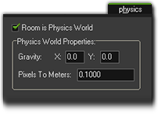

Tutorial
Page 5 of 7
The Room Editor
Create a new room resource and call it "rm_Game". Place an instance of our new player ship object "obj_Player" in the middle of the room, but don't test it yet! We must first tell
GameMaker:Studio to create a physics world for that room. Click on the "Physics" tab of the room editor to bring it up.

For any objects with fixtures bound to them to work as we wish, we must tick the Room is Physics World checkbox, and then define some basic world properties. These are:
- Gravity : this is calculated as a vector using the x/y coordinates you input. The length of the vector indicates the force of gravity, and the direction indicates the
direction of "pull". So, a vector of x=1, y=1 would give you a weak gravity that pulls you up and to the right, while a vector of x=0, y=10 would give you a strong downwards gravity.
- Pixels To Meters : The maths behind the physics functions work using real-world sizes, so this means that we have to translate our pixel sizes into meters. This value controls
how that ratio works, with (for example) a value of 0.1 being a ratio of 1pixel = 10cms. This value should not be any extreme value as it will cause problems.
You want to leave the Pixels To Meter ratio as it is, but make sure that both the x and y coordinates for the gravity vector are set to 0, as we are making a space game and don't
want any gravity to interfere! Now test your game to make sure that the ship moves forward, rotates and wraps around the screen as it should. This is also a good moment to save your progress
and then play around with different values for the density and damping of your object, and so get a "feel" for how the physics works.
Click on the Next button to go to the next page of the tutorial.